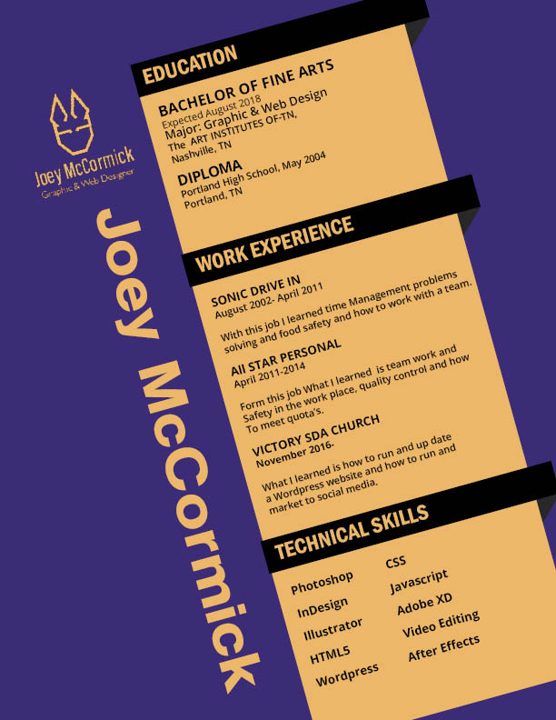

Evil Dead Poster

This poster was made using adobe illustrator for a final this took six weeks to make and I learned how to use the tools and make digital art
My Branding

This logo is my brand, one of the taskes I was to come up with a logo that imbodies me and my work.
Star Recovery

I was tasked with coming up with a new logo for a repo company and this was the one. because we want to drop the idea of repo with it's negative meaning and make the prosses sound more elagent.
Moving Poster
This project what part of my after effects class this was one part of the gif's that told a story we where tasked with making it thierty seconds long and add sound as well.
Felt Tip Senior type

This whas a project for one of my first digital design calsses using hand font that we found and telling the story of who made it and other info we could find on it.
Rusume


Re Branding